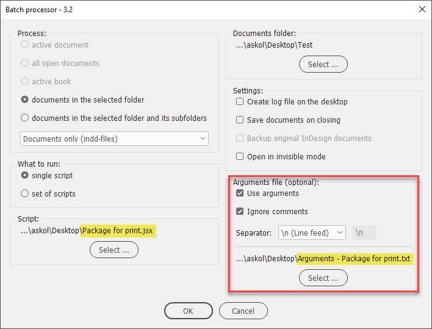

Package
This script was written for Batch processor to batch-package InDesign documents.

This script can be also used as a regular stand-alone one.
You can use it with or without an arguments file (a sample is included).
The sample file contains comments for each parameter so read them and edit the file (in a plain text editor like Notepad) to your requirements.
Make sure to turn on the Ignore comments checkbox.
If no arguments file is used, the default hard-coded settings are used instead.
Each line in the arguments file corresponds to the parameter in the packageForPrint() method.
Arguments file

Parameters for the packageForPrint method

Click here to download the script.
Back to the Scripts for batch processor page